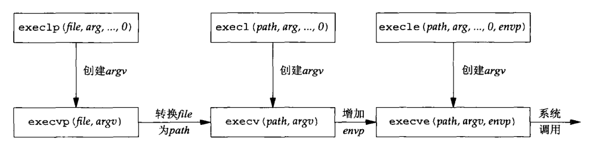

Unix网络编程-第4章 基本TCP套接字编程
4.1 概述
TCP客户与服务器进程之间发生的一些典型事件的时间表:
4.2 socket函数
为了执行网络I/O，一个进程必须做的第一件事就是：调用socket函数，指定期望的通信协议类型。
|
- family参数指明协议族（该参数又被称为协议域），是一个常值。
- type参数指明套接字类型，是一个常值。
- protocol参数设置为对应协议类型的常值。
并非所有套接字family和type的组合都是有效的:
AF_前缀表示地址族，PF_前缀表示协议族。
历史想法：单个协议族可以支持多个地址族，PF_值用来创建套接字，而AF_值用于套接字地址结构。实际上，支持多个地址族的协议族从来就未实现过，头文件<sys/socket.h>中为一给定协议定义的PF_值总是与此协议的AF_值相等。
4.3 connect函数
TCP客户用connect函数来建立与TCP服务器的连接。
|
- 参数1：由socket函数返回的_套接字描述符_。
- 参数2：一个指向套接字地址结构的指针
- 参数3：套接字地址结构的大小
客户在调用connect函数前不必非得调用bind函数，如果需要的话内核会确定源IP地址并选择一个临时端口作为源端口。
TCP套接字
如果是TCP套接字，调用connect函数将激发TCP三次握手过程，连接成功或失败才返回。
出错情况：
ETIMEDOUT错误，未收到SYN分节的响应（超时重传后）。
ECONNREFUSED错误，客户的SYN响应是RST（复位），表明服务器主机在指定的端口上没有进程在等待与之连接。这是一种硬错误。客户收到RST后立马返回错误。
产生RST的三个条件：
1. 目的地为某端口的SYN到达，然而该端口上没有正在监听的服务器
2. TCP想取消一个已有的连接
3. TCP接收到一个根本不存在的连接上的分节EHOSTUNREACH
或ENETUNREACH错误，客户发出的SYN在发生的过程中遇到“destination unreachable”（目的地不可到达）ICMP错误。这是一种软错误。重传后仍未被响应则返回错误给进程。产生EHOSTUNREACH错误的其他可能情况：
1. 按照本地系统的转发表，根本没有到达远程系统的路径
2. connect调用根本不等待就返回
按照TCP状态转换图，connect函数导致当前套接字从CLOSED状态（该套接字自从由socket函数创建以来一直所在的状态）转移到SYN_SENT状态，若成功再转移到ESTABLISHED状态。
若connect函数返回失败后，当前套接字必须close不可以再使用，当重新connect之前必须重新调用socket函数。
4.4 bind函数
把一个本地协议地址赋予一个套接字。对于网际网协议，协议地址是32位的IPv4地址或128位的IPv6地址与16位的TCP或UDP端口号的组合。
|
- 参数1：由socket函数返回的_套接字描述符_。
- 参数2：一个指向特定协议的地址结构的指针
- 参数3：该地址结构的长度
_函数返回的一个常见错误_：EADDRINUSE（“Address already in use”，地址已使用）
对于TCP
调用bind函数可以指定一个端口号，或指定一个IP地址，也可以两者都指定，还可以两者都不指定。
- 服务器一般捆绑熟知端口号，远程过程调用（RPC）服务器例外
- 客户一般由内核为套接字选择一个临时端口，除非应用需要一个预留端口
- 客户将一个特定的IP绑定到套接字，则为在该套接字上发送的IP数据报指定了源IP地址
- 服务器将一个特定的IP绑定到套接字，则限定该套接字只接收那些目的地址为该IP地址的客户连接
- TCP客户通常不把IP地址捆绑到它的套接字上，当连接套接字时，内核根据外出网络接口来选择源IP地址
- TCP服务器没有捆绑IP地址，内核就把客户的SYN的目的地址作为服务器的源IP地址
IPv4：设置sin_addr和sin_port
通配地址由常值INADDR_ANY来指定，其值一般为0，无论主机字节序还是网络字节序值为0都一样，因此使用htonl并非必需。
|
IPv6：设置sin6_addr和sin6_port
|
_内核为套接字选择临时端口号_：调用函数getsockname返回协议地址。
进程捆绑非通配IP地址：一个主机提供多个服务，根据IP地址访问相对应的服务页面
4.5 listen函数
listen函数仅由TCP服务器调用，它做两件事：
- 当socket创建一个套接字时，默认为主动套接字，是一个客户套接字，可以调用connect发起连接。listen函数将其转换为被动套接字，指示内核应该接受指向该套接字的连接请求。
- 函数的第二个参数规定内核应该为相应套接字排队的最大连接个数。
- 根据TCP转换图，调用listen导致套接字从CLOSED状态转换到LISTEN状态。
|
内核为每个监听套接字维护两个队列：
- 未完成连接队列。客户SYN到达服务器但未完成三次握手。
- 已完成连接队列。完成三次握手。
每当在未完成连接队列中创建一项时，来自监听套接字的参数就复制到即将建立的连接中，连接的创建机制是完成自动的，无需服务器进程插手。
当进程调用accept时，已完成连接队列的队头项返回给进程，如果此队列为空则该进程投入睡眠，直到已完成连接队列放入一项才唤醒。
关于两个队列的处理，有几点考虑：
listen函数的backlog参数曾经被规定为两个队列总和的最大值，4.2BSD手册页面定义为：由未处理连接构成的队列可能增长到的最大长度
源自Berkeley的实现给backlog增设了一个模糊因子：把它乘以1.5得到未处理队列的最大长度
不要把backlog定义为0
未完成连接队列中任何一项的存留时间是一个RTT（三次握手正常完成的情况下）
历来沿用的样例代码总是给出值为5的backlog
backlog的值为5往往不够，可以通过命令行选项或环境变量覆盖该默认值，若指定值超过内核支持的最大值，则内核将指定的偏大值截成自身支持的最大值，不返回错误
手册和书本历来称：将固定数目的未处理连接排成队列是为了处理服务器进程在相继的accept调用之间处于忙状态的情况。这隐含的意思是：已完成队列通常比未完成队列有更多的项。繁忙的服务器表明这是不对的，指定较大的backlog值的理由在于：随着客户SYN分节的到达，未完成连接队列中的项数可能增长，它们等着三次握手的完成。当客户SYN到达时，若这些队列是满的，TCP就忽略这分节而不发送RST，让客户进行重传
客户无法区别响应SYN的RST究竟意味什么，可能情况是：
1. 该端口没有服务器在监听
2. 该端口有服务器在监听，不过队列满了三次握手完成后，调用accept之前，到达的数据由服务器TCP排队，最大数据量为相应已连接套接字的接收缓冲区大小
回味listen的backlog参数的确切含义：它应该指定某个给定套接字上内核为之排队的最大已完成连接数。对已完成连接数作出限制的目的在于：在监听某个给定套接字的应用进程（不论什么原因）停止接受连接的时候，防止内核在该套接字上继续接受新的连接请求（客户的connect）。
4.6 accept函数
accept函数由TCP服务器调用，用于从已完成连接队列队头返回下一个已完成连接。如果队列为空，那么进程被投入睡眠（假定套接字为默认的阻塞方式）。
|
参数cliaddr和addrlen用来返回已连接的对端进程（客户）的协议地址。addrlen是值-结果参数。
accept成功返回一个由内核自动生成的_已连接套接字描述符_，代表与所返回客户的TCP连接。当服务器完成对某个给定的客户的服务时，相应的已连接套接字就被关闭。
accept函数的第一个参数为_监听套接字描述符_。一个服务器通常仅仅创建一个监听套接字，它在服务器的生命周期内一直存在。
4.7 fork和exec函数
fork函数是Unix中派生新进程的唯一方法，调用一次fork，返回两次结果：
- 在调用进程（称为父进程）中返回一次，告知新派生进程（称为子进程）的进程ID号
- 在子进程中返回一次，返回值为0，告知当前进程是子进程还是父进程
这样设计的原因是：任何子进程只有一个父进程，子进程可以通过getppid获取父进程ID。而父进程可以有多个子进程，而无法获取各个子进程的进程ID。
|
父进程中调用的fork之前打开的所有描述符在fork返回之后由子进程分享。网络服务器利用此特性：父进程accept之后调用fork，所接受的已连接套接字在父进程和子进程之间共享，通常情况下，子进程接着读写这个已连接套接字，父进程则关闭这个已连接套接字。
fork有两个典型用法：
- 一个进程创建一个自身的副本，每个副本执行各自的任务
- 一个进程执行另一个程序，调用fork创建一个自身的副本后，副本调用exec把自身替换成新程序
存放在硬盘上的可执行文件被Unix执行的唯一方法是：由一个现有进程调用exec函数，exec函数把当前进程映像替换成新的程序文件，而且该新程序通常从main函数开始执行，进程ID不变。
**我们称调用exec的进程为_调用进程_，称新执行的程序为_新程序_**。
exec函数有6个，其区别是：
- 待执行的程序文件是由_文件名还是由路径名_指定
- 新程序的参数是一一列出还是由一个指针数组来引用
- 把调用进程的环境传递给新程序还是给新程序指定新的环境
|
这些函数只在出错时才返回到调用者，否在，控制将被传递给新程序的起始点，通常是main函数。
execve是内核中的系统调用，其他5个都是调用execve的库函数。

- 上面的三个函数以空指针结束可变数量的参数，下面三个的参数数组argv必须含有一个用于指定其末尾的空指针
- 左列2个函数指定一个filename参数，如果filename参数里不包含斜杆（/），exec将使用当前PATH环境变量把该文件名参数转换为一个路径名
- 左边2列4个函数不显示指定一个环境指针，使用外部变量environ的当前值来构造一个传递给新程序的环境列表。右列2个函数显示指定一个环境列表，其envp指针数组必须以一个空指针结束
4.8 并发服务器
目的：子进程处理与客户的连接，父进程则可以在监听套接字上再次调用accept来处理下一个客户连接。
|
对一个TCP套接字调用close会导致发送一个FIN分节，随后进行正常的TCP连接终止序列。而程序中父进程对connfd调用close并没有终止它与客户的连接，原因是：每个文件或套接字都有一个引用计数，引用计算在文件表项中维护，它是当前打开着的引用该文件或套接字的描述符的个数。程序中fork后子进程共享了父进程的套接字描述符，使得套接字的引用计数加一均变为2，这样父进程close时，只是将引用计数从2减为1。该套接字真正的清理和资源释放要等到引用计数值变为0时才发生。
4.9 close函数
通常的Unix close函数也用来关闭套接字，并终止TCP连接。
|
close一个TCP套接字的默认行为是把该套接字标记为已关闭，然后立即返回调用进程，被关闭的套接字不能再由调用进程使用，也就是它不能再作为read或write的第一个参数。然后TCP将尝试发送已排队等待发送到对端的任何数据，发送完毕后发生正常的TCP连接终止序列。
描述符引用计数
close将导致相应描述符引用计数值减1，只要引用计数值仍大于0则不会引发TCP连接终止序列。
如果确实想在某个TCP连接上发送一个FIN，那么可以改用shutdown函数代替close。
任何进程在任何时刻可拥有的打开着的描述符数通常是有限制的。如果父进程对每个accept返回的已连接套接字都不调用close，首先父进程最终将耗尽可用描述符，接着没有一个客户连接会被终止，TCP连接终止序列也不会发生。
4.10 getsockname和getpeername函数
getsockname函数：返回与某个套接字关联的本地协议地址
getpeername函数：返回与某个套接字关联的外地协议地址
|
两个函数的最后一个参数都是值-结果参数，说明两个函数都要装填由localaddr或peeraddr指针所指的套接字地址结构。
使用情况：
- TCP客户没有调用bind，connect成功返回后，使用getsockname返回由内核赋予该连接的本地IP地址和本地端口号
- 在以端口号0调用bind后，使用getsockname返回由内核赋予的本地端口号
- 可用于获取某个套接字的地址族
- 在以通配IP地址调用bind的TCP服务器上，accept成功返回后，使用getsockname返回由内核赋予该连接的本地IP地址，这里的套接字描述符参数必须是已连接套接字描述符，不是监听套接字描述符
- 服务器某个进程accept后调用exec执行新的程序，子进程的内存映像被替换（包含端地址的那个套接字地址结构丢失），但已连接套接字的描述符跨exec继续保持开放，子进程使用函数getpeername用于获取客户的IP地址和端口号。
inetd派生服务器例子，服务器获取connfd描述符值的两种方法：
- 调用exec的进程可以把这个描述符号格式化成一个字符串，再把它作为一个命令行参数传递给新程序
- 约定在调用exec之前，总是把某个特定描述符置为所接受的已连接套接字的描述符
- inetd采用第二种方法，它总是把描述符0、1、2置为所接受的已连接套接字的描述符
POSIX规范允许对未绑定的套接字调用getsockname，该函数应该适合任何已打开的套接字描述符。
大多数TCP服务器是并发的，大多数UDP服务器是迭代的。